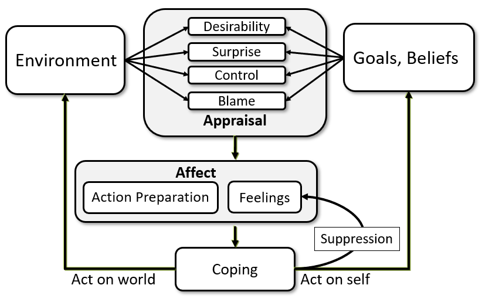
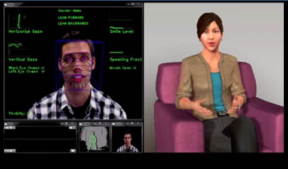

Jonathan Gratch
Professor of Computing · College of Connected Computing · Director, Affective Computing Group, Vanderbilt University
About
Jonathan Gratch is a Professor at Vanderbilt University's College of Connected Computing, where he directs the Affective Computing Group. His research develops human-like software agents for virtual training, therapy, and education environments, and uses these computational methods to give concrete, testable form to psychological theories of human behavior. He studies how algorithms can drive the behavior of characters in virtual worlds, giving them the ability to reason about and engage in socio-emotional interaction with people through both verbal and nonverbal communication. Before joining Vanderbilt, he was Director for Virtual Human Research at the USC Institute for Creative Technologies and Director of the USC Affective Computing Group. He is actively recruiting PhD students at Vanderbilt.
Research Interests
Affective computing, cognitive modeling, human-computer interaction, virtual humans, and persuasive technology. Across these areas, the throughline is the same: building working computational models of psychological theory, so that ideas about how people think, feel, and interact can be instantiated, systematically manipulated, and empirically tested — not just described.
Emotion as the Foundation of Social Intelligence
Emotion is not an add-on to intelligence — it is a mechanism that preparesfor action in complex, uncertain worlds and coordinates social interaction with human users
. Building on appraisal theory, my research models how emotion organizes decision making, coping, and action selection. Building on reverse appraisal theory, it also studies how emotional expressions influence the beliefs, trust, and decisions of interaction partners. Recent work suggests that appraisal-based representations also emerge in large language models, reinforcing the relevance of these theories for modern AI.- A Domain-independent Framework for Modeling Emotion (2004)
- Social Functions of Machine Emotional Expressions (2023)
- Mechanistic interpretability of emotion inference in large language models (2025)

Virtual Humans
This line of work brings together intelligent tutoring, natural language understanding and generation, interactive narrative, emotion modeling, and immersive graphics and audio to build realistic, compelling training environments populated by synthetic humans that respond emotionally to a trainee's decisions in real time.
Social Emotions and Rapport
When people interact, speech prosody, gesture, gaze, posture, and facial expression combine to build a sense of rapport — a factor linked to success in negotiation, psychotherapy, classroom performance, and even susceptibility to hypnosis. This work uses machine vision and prosody analysis to build virtual humans that detect and respond to human gestures, expressions, and emotional cues in real time to establish rapport with a human partner.

Anthropomorphism in Human-Machine Interaction
Machines are increasingly designed with human-like qualities, on the assumption that this improves human-machine interaction. But the evidence is mixed: human-like qualities can also produce unintended, disruptive effects, and in some cases emphasizing a system's "machine-ness" rather than downplaying it is what actually improves the interaction.
Teaching
I am not yet teaching at Vanderbilt but I regularly teach a course on Affective Computing
Syllabus (PDF)Contact
Vanderbilt University
College of Connected Computing
Nashville, TN